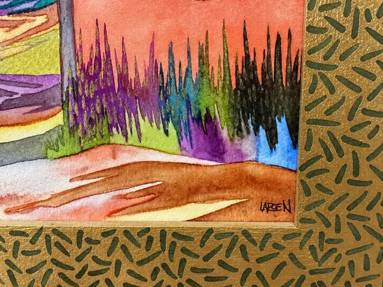
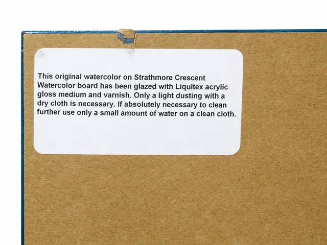
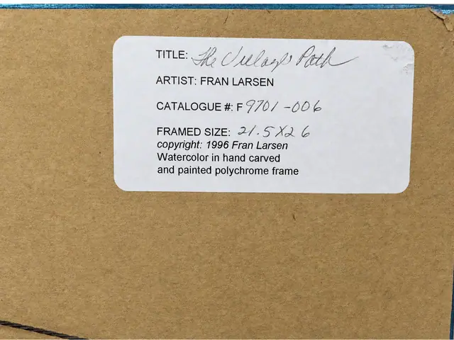

Paintings & Prints
Fran Larsen 'The Village Path' Watercolour, Hand Carved Polychrome Frame, 1996
Fran Larsen · 1996
Price Upon Request




About the Item
FRAN LARSEN 'The Village Path', 1996. Watercolour on Strathmore Crescent board, glazed with acrylic gloss medium and varnish, in a hand carved and painted polychrome frame. Titled and catalogued F 9701-006 on the label to the reverse. Framed size 21.5 by 26 inches.
About the Artist
Fran Larsen is an American watercolourist known for jewel-coloured Southwest scenes presented in hand-carved, painted polychrome frames of her own design.
Details
- Creator:
- Fran Larsen
- Creation Year:
- 1996
- Dimensions:
- Height: 26.0 in (66.04 cm)
Width: 21.5 in (54.61 cm)
outside of frame - Medium:
- Watercolor in hand carved and painted polychrome frame
- Period:
- 20Th
- Condition:
- Offered in the condition shown in the photographs.
- Reference Number:
- F 9701-006